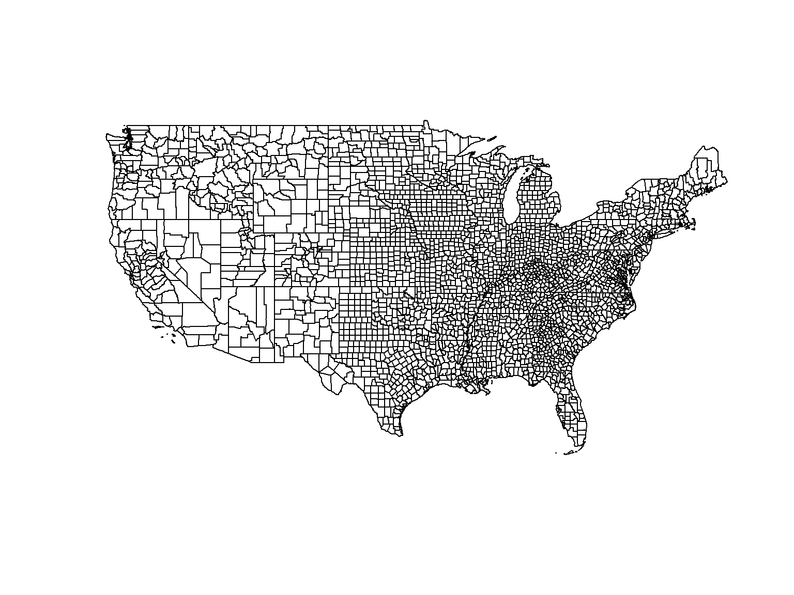
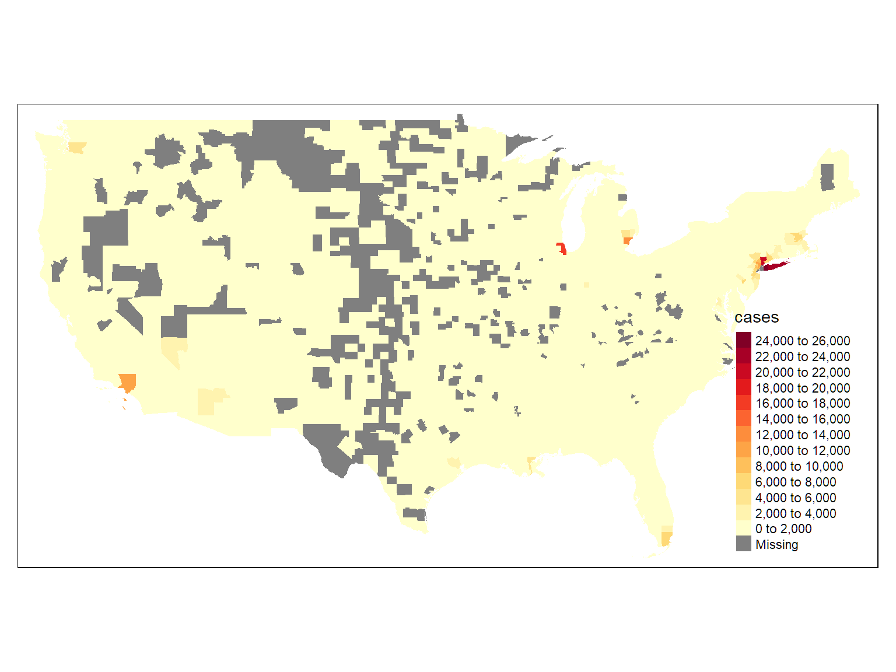

Anatomy of a tmap Choropleth Map
Choropleth maps use different colors and symbol properties to display feature attributes.
While you can make choropleth maps in base R, it’s a lot easier to use tmap, ggplot2, or other packages.
## Reading layer `ca_counties' from data source `C:\Workshops\R-Spatial\rspatial_mod\outputs\rspatial_bgs20\docs\data\ca_counties.geojson' using driver `GeoJSON'
## Simple feature collection with 58 features and 13 fields
## geometry type: MULTIPOLYGON
## dimension: XYZ
## bbox: xmin: -124.4096 ymin: 32.53416 xmax: -114.1312 ymax: 42.00952
## z_range: zmin: 0 zmax: 0
## CRS: 4326
## Observations: 58
## Variables: 14
## $ STATEFP <fct> 06, 06, 06, 06, 06, 06, 06, 06, 06, 06, 06, 06, 06, 06, 06, 06, 06, 06, 06, 06, 06, 06, 06,...
## $ COUNTYFP <fct> 099, 075, 005, 071, 091, 093, 063, 079, 049, 011, 013, 111, 059, 113, 019, 033, 057, 037, 0...
## $ LSAD <fct> 22, 22, 22, 22, 22, 22, 22, 22, 22, 22, 22, 22, 22, 22, 22, 22, 22, 22, 22, 22, 22, 22, 22,...
## $ ALAND <dbl> 3870792979, 121451664, 1539947591, 51947497395, 2468686345, 16259635719, 6612371925, 854372...
## $ AWATER <dbl> 51176484, 479139414, 29470575, 123929658, 23299112, 179864658, 156389419, 820409436, 745929...
## $ CountyFIPS <fct> 06099, 06075, 06005, 06071, 06091, 06093, 06063, 06079, 06049, 06011, 06013, 06111, 06059, ...
## $ CountyNAME <fct> Stanislaus County, San Francisco County, Amador County, San Bernardino County, Sierra Count...
## $ POP2010 <dbl> 515283, 805825, 37860, 2041689, 3221, 44971, 19918, 269860, 9708, 21459, 1052894, 825353, 3...
## $ POP2011 <dbl> 518270, 816239, 37520, 2064663, 3104, 44719, 19690, 271165, 9499, 21415, 1066587, 830973, 3...
## $ POP2012 <dbl> 522134, 829691, 37072, 2080651, 3076, 44214, 19341, 274528, 9332, 21397, 1079358, 835476, 3...
## $ POP2013 <dbl> 526286, 841138, 36602, 2093306, 3040, 43773, 18877, 276284, 9112, 21432, 1095980, 840972, 3...
## $ POP2014 <dbl> 531997, 852469, 36742, 2112619, 3003, 43628, 18606, 279083, 9023, 21419, 1111339, 846178, 3...
## $ SQMI <dbl> 1494.52, 46.89, 594.58, 20057.04, 953.17, 6277.88, 2553.05, 3298.75, 3915.40, 1150.73, 722....
## $ geometry <MULTIPOLYGON [m]> MULTIPOLYGON Z (((-131297 -..., MULTIPOLYGON Z (((-205081.3..., MULTIPOLYGON Z...

Arguments that define the choropleth generally go in the function that displays the features (e.g., tm_symbols(), tm_polygons(), tm_fill(), tm_borders())
Common arguments include:
col - the column that has the values
n - number of ‘bins’ to create
style - how the ‘bins’ should be constructed
Discrete options: “cat”, “fixed”, “sd”, “equal”, “pretty”, “quantile”, “kmeans”, “hclust”, “bclust”, “fisher”, “jenks”, and “log10_pretty”`
Continuous options: “cont”, “order”, “log10”, “fixed”
breaks - specific break points (when style = 'fixed')
palette - 2to see a list of named palettes, run RColorBrewer::brewer.pal.info
Make a map of the 2014 population density per county (i.e., population / square mile). Use a monochromatic color ramp (e.g., ‘Purples’). Hint
Create the column first using dplyr::mutate()
Because California’s population at the county level is so skewed (thanks LA!), consider using the ‘log10’ style to scale the values logarithmically.
Solution
## Min. 1st Qu. Median Mean 3rd Qu. Max.
## 1.512 25.555 107.375 696.709 347.779 18180.188

Creating a Map of Coronavirus Cases
The New York Times compiles data on Coronavirus infections and deaths by county for the entire USA, drawing upon a variety of sources. They share these data on GitHub. In this exercise, we will map the outbreak by county.
Workflow overview
- Get the prevalence rate data from the New York Times GitHub site
- Filter the data to the most recent date
- Download the county boundaries for the entire USA as a Simple Features Data Frame
- Join the tables
- Create a choropleth map
1. Get the prevalence rate data from the New York Times GitHub site (by county)
## [1] "date" "county" "state" "fips" "cases" "deaths"
## Observations: 59,249
## Variables: 6
## $ date <fct> 2020-01-21, 2020-01-22, 2020-01-23, 2020-01-24, 2020-01-24, 2020-01-25, 2020-01-25, 2020-01-25,...
## $ county <fct> Snohomish, Snohomish, Snohomish, Cook, Snohomish, Orange, Cook, Snohomish, Maricopa, Los Angele...
## $ state <fct> Washington, Washington, Washington, Illinois, Washington, California, Illinois, Washington, Ari...
## $ fips <int> 53061, 53061, 53061, 17031, 53061, 6059, 17031, 53061, 4013, 6037, 6059, 17031, 53061, 4013, 60...
## $ cases <int> 1, 1, 1, 1, 1, 1, 1, 1, 1, 1, 1, 1, 1, 1, 1, 1, 1, 1, 1, 1, 1, 1, 1, 1, 1, 1, 1, 1, 1, 1, 1, 2,...
## $ deaths <int> 0, 0, 0, 0, 0, 0, 0, 0, 0, 0, 0, 0, 0, 0, 0, 0, 0, 0, 0, 0, 0, 0, 0, 0, 0, 0, 0, 0, 0, 0, 0, 0,...
How many rows are in the COVID19 dataset?
How many counties are included in this dataset?
Hint
Solution
County code is saved in column ‘fips’
## [1] 59249
## # A tibble: 1 x 1
## n
## <int>
## 1 2694
2. Filter the Data to the Most Recent Date
Get just the most recent data point for each county.
## [1] 2724
3. Download the county boundaries for the entire USA
There are a handful of R packages that ‘bundle’ administrative boundaries, and/or provide function you can use to download them (e.g., USABoundaries, raster). We’ll use the tigris package, which lets you download spatial data from the US Census Bureau.
## [1] "Alabama" "Arizona" "Arkansas" "California" "Colorado" "Connecticut"
## [7] "Delaware" "Florida" "Georgia" "Idaho" "Illinois" "Indiana"
## [13] "Iowa" "Kansas" "Kentucky" "Louisiana" "Maine" "Maryland"
## [19] "Massachusetts" "Michigan" "Minnesota" "Mississippi" "Missouri" "Montana"
## [25] "Nebraska" "Nevada" "New Hampshire" "New Jersey" "New Mexico" "New York"
## [31] "North Carolina" "North Dakota" "Ohio" "Oklahoma" "Oregon" "Pennsylvania"
## [37] "Rhode Island" "South Carolina" "South Dakota" "Tennessee" "Texas" "Utah"
## [43] "Vermont" "Virginia" "Washington" "West Virginia" "Wisconsin" "Wyoming"

How many counties are there in the lower 48 states? Soltn
4. Join the tables
Which column can we use to join the county boundaries to the COVID-19 prevalance data?
Solution
It looks like fips’ and ‘GEOID’
Try to join the tables:
## Error: Can't join on 'fips' x 'GEOID' because of incompatible types (integer / character)

Create a numeric version of the GEOID column:
## [1] 39071 6003 12033 17101 28153 28141
Try the join again:
## [1] 3107
## [1] 3107
## Observations: 3,107
## Variables: 16
## $ STATEFP <chr> "39", "06", "12", "17", "28", "28", "30", "36", "42", "29", "29", "04", "13", "21", "27", "4...
## $ COUNTYFP <chr> "071", "003", "033", "101", "153", "141", "089", "001", "105", "077", "205", "015", "143", "...
## $ COUNTYNS <chr> "01074048", "01675840", "00295737", "00424252", "00695797", "00695791", "01719578", "0097409...
## $ AFFGEOID <chr> "0500000US39071", "0500000US06003", "0500000US12033", "0500000US17101", "0500000US28153", "0...
## $ GEOID <chr> "39071", "06003", "12033", "17101", "28153", "28141", "30089", "36001", "42105", "29077", "2...
## $ NAME <chr> "Highland", "Alpine", "Escambia", "Lawrence", "Wayne", "Tishomingo", "Sanders", "Albany", "P...
## $ LSAD <chr> "06", "06", "06", "06", "06", "06", "06", "06", "06", "06", "06", "06", "06", "06", "06", "0...
## $ ALAND <dbl> 1432479992, 1912292630, 1701544502, 963936864, 2099745573, 1098938845, 7149405165, 135412079...
## $ AWATER <dbl> 12194983, 12557304, 563927612, 5077783, 7255476, 52360190, 76394144, 27124553, 559778, 66200...
## $ GEOID_INT <dbl> 39071, 6003, 12033, 17101, 28153, 28141, 30089, 36001, 42105, 29077, 29205, 4015, 13143, 211...
## $ date <fct> 2020-04-14, 2020-04-14, 2020-04-14, 2020-04-14, 2020-04-14, 2020-04-14, NA, 2020-04-14, 2020...
## $ county <fct> Highland, Alpine, Escambia, Lawrence, Wayne, Tishomingo, NA, Albany, Potter, Greene, Shelby,...
## $ state <fct> Ohio, California, Florida, Illinois, Mississippi, Mississippi, NA, New York, Pennsylvania, M...
## $ cases <int> 7, 2, 247, 2, 9, 2, NA, 535, 4, 73, 1, 45, 19, 24, 2, 289, 101, NA, 4, 102, 2, 114, 2, 2, 14...
## $ deaths <int> 0, 0, 4, 0, 0, 0, NA, 21, 0, 8, 0, 2, 1, 2, 0, 9, 2, NA, 1, 0, 0, 2, 0, 0, 2, 0, NA, 0, 0, 1...
## $ geometry <MULTIPOLYGON [°]> MULTIPOLYGON (((-83.86976 3..., MULTIPOLYGON (((-120.0725 3..., MULTIPOLYGON ((...
5. Create a choropleth map
Finally, the fun part!

Create maps of the ‘deaths’ and ‘percent of cases that died’
Next: Geoprocessing